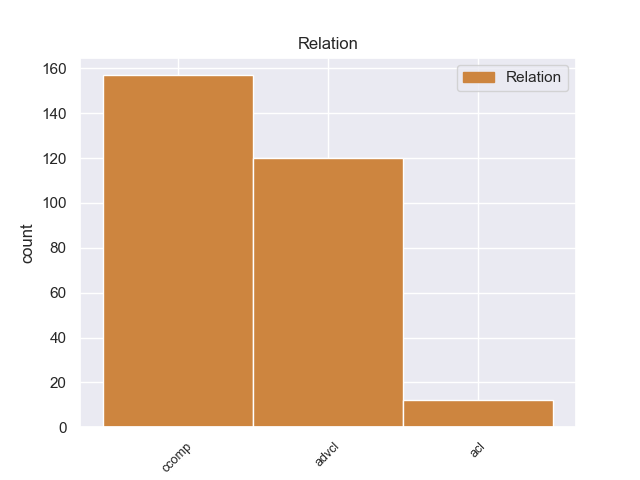
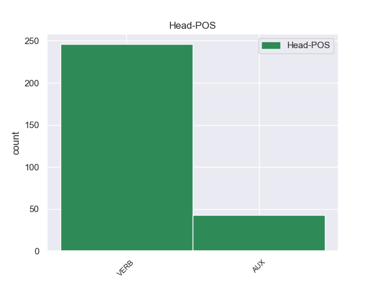
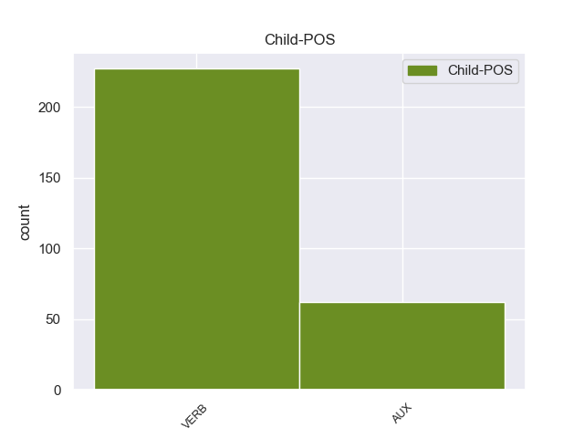

Distribution of features within this leaf



Agreement Rules sorted by frequency.
- When the dependent token is the clausal complement(ccomp) of the head token,
1 Este _ _ _ _ 0 _ _ _
2 pastoral _ _ _ _ 0 _ _ _
3 cuenta contar VERB _ Mood=Ind|Number=Sing|Person=3|Tense=Pres|VerbForm=Fin 0 _ _ _
4 cómo _ _ _ _ 0 _ _ _
5 Marion _ _ _ _ 0 _ _ _
6 resiste resistir VERB _ Mood=Ind|Number=Sing|Person=3|Tense=Pres|VerbForm=Fin 3 ccomp _ _
7 a _ _ _ _ 0 _ _ _
8 un _ _ _ _ 0 _ _ _
9 caballero _ _ _ _ 0 _ _ _
10 , _ _ _ _ 0 _ _ _
11 y _ _ _ _ 0 _ _ _
12 permanece _ _ _ _ 0 _ _ _
13 fiel _ _ _ _ 0 _ _ _
14 a _ _ _ _ 0 _ _ _
15 el _ _ _ _ 0 _ _ _
16 pastor _ _ _ _ 0 _ _ _
17 Roberto _ _ _ _ 0 _ _ _
18 ; _ _ _ _ 0 _ _ _
1 El _ _ _ _ 0 _ _ _
2 depósito _ _ _ _ 0 _ _ _
3 en _ _ _ _ 0 _ _ _
4 el _ _ _ _ 0 _ _ _
5 cual _ _ _ _ 0 _ _ _
6 se _ _ _ _ 0 _ _ _
7 halló _ _ _ _ 0 _ _ _
8 a _ _ _ _ 0 _ _ _
9 Trilophosaurus _ _ _ _ 0 _ _ _
10 es ser VERB _ Mood=Ind|Number=Sing|Person=3|Tense=Pres|VerbForm=Fin 0 _ _ _
11 de _ _ _ _ 0 _ _ _
12 principios _ _ _ _ 0 _ _ _
13 de _ _ _ _ 0 _ _ _
14 el _ _ _ _ 0 _ _ _
15 Mioceno _ _ _ _ 0 _ _ _
16 , _ _ _ _ 0 _ _ _
17 hace hacer VERB _ Mood=Ind|Number=Sing|Person=3|Tense=Pres|VerbForm=Fin 10 advcl _ _
18 más _ _ _ _ 0 _ _ _
19 o _ _ _ _ 0 _ _ _
20 menos _ _ _ _ 0 _ _ _
21 20 _ _ _ _ 0 _ _ _
22 millones _ _ _ _ 0 _ _ _
23 de _ _ _ _ 0 _ _ _
24 años _ _ _ _ 0 _ _ _
25 . _ _ _ _ 0 _ _ _
1 Una _ _ _ _ 0 _ _ _
2 variedad _ _ _ _ 0 _ _ _
3 cultivada _ _ _ _ 0 _ _ _
4 , _ _ _ _ 0 _ _ _
5 a _ _ _ _ 0 _ _ _
6 veces _ _ _ _ 0 _ _ _
7 también _ _ _ _ 0 _ _ _
8 denominada _ _ _ _ 0 _ _ _
9 por _ _ _ _ 0 _ _ _
10 su _ _ _ _ 0 _ _ _
11 nombre _ _ _ _ 0 _ _ _
12 en _ _ _ _ 0 _ _ _
13 inglés _ _ _ _ 0 _ _ _
14 , _ _ _ _ 0 _ _ _
15 cultivar _ _ _ _ 0 _ _ _
16 ( _ _ _ _ 0 _ _ _
17 contracción _ _ _ _ 0 _ _ _
18 de _ _ _ _ 0 _ _ _
19 cultivated _ _ _ _ 0 _ _ _
20 variety _ _ _ _ 0 _ _ _
21 ) _ _ _ _ 0 _ _ _
22 , _ _ _ _ 0 _ _ _
23 es _ _ _ _ 0 _ _ _
24 un _ _ _ _ 0 _ _ _
25 término _ _ _ _ 0 _ _ _
26 empleado _ _ _ _ 0 _ _ _
27 en _ _ _ _ 0 _ _ _
28 Botánica _ _ _ _ 0 _ _ _
29 y _ _ _ _ 0 _ _ _
30 agronomía _ _ _ _ 0 _ _ _
31 para _ _ _ _ 0 _ _ _
32 aquellas _ _ _ _ 0 _ _ _
33 poblaciones _ _ _ _ 0 _ _ _
34 de _ _ _ _ 0 _ _ _
35 plantas _ _ _ _ 0 _ _ _
36 cultivadas _ _ _ _ 0 _ _ _
37 que _ _ _ _ 0 _ _ _
38 son ser AUX _ Mood=Ind|Number=Plur|Person=3|Tense=Pres|VerbForm=Fin 0 _ _ _
39 genéticamente _ _ _ _ 0 _ _ _
40 homogéneas _ _ _ _ 0 _ _ _
41 y _ _ _ _ 0 _ _ _
42 ( _ _ _ _ 0 _ _ _
43 1 _ _ _ _ 0 _ _ _
44 ) _ _ _ _ 0 _ _ _
45 comparten _ _ _ _ 0 _ _ _
46 características _ _ _ _ 0 _ _ _
47 de _ _ _ _ 0 _ _ _
48 relevancia _ _ _ _ 0 _ _ _
49 agrícola _ _ _ _ 0 _ _ _
50 que _ _ _ _ 0 _ _ _
51 permiten _ _ _ _ 0 _ _ _
52 distinguir _ _ _ _ 0 _ _ _
53 claramente _ _ _ _ 0 _ _ _
54 a _ _ _ _ 0 _ _ _
55 la _ _ _ _ 0 _ _ _
56 población _ _ _ _ 0 _ _ _
57 de _ _ _ _ 0 _ _ _
58 las _ _ _ _ 0 _ _ _
59 demás _ _ _ _ 0 _ _ _
60 poblaciones _ _ _ _ 0 _ _ _
61 de _ _ _ _ 0 _ _ _
62 la _ _ _ _ 0 _ _ _
63 especie _ _ _ _ 0 _ _ _
64 y _ _ _ _ 0 _ _ _
65 ( _ _ _ _ 0 _ _ _
66 2 _ _ _ _ 0 _ _ _
67 ) _ _ _ _ 0 _ _ _
68 traspasan traspasar VERB _ Mood=Ind|Number=Plur|Person=3|Tense=Pres|VerbForm=Fin 38 acl _ _
69 estas _ _ _ _ 0 _ _ _
70 características _ _ _ _ 0 _ _ _
71 de _ _ _ _ 0 _ _ _
72 generación _ _ _ _ 0 _ _ _
73 en _ _ _ _ 0 _ _ _
74 generación _ _ _ _ 0 _ _ _
75 , _ _ _ _ 0 _ _ _
76 de _ _ _ _ 0 _ _ _
77 forma _ _ _ _ 0 _ _ _
78 sexual _ _ _ _ 0 _ _ _
79 o _ _ _ _ 0 _ _ _
80 asexual _ _ _ _ 0 _ _ _
81 . _ _ _ _ 0 _ _ _
Disagree Examples:
1 Creo creer VERB _ Mood=Ind|Number=Sing|Person=1|Tense=Pres|VerbForm=Fin 22 ccomp _ _
2 que _ _ _ _ 0 _ _ _
3 es _ _ _ _ 0 _ _ _
4 importante _ _ _ _ 0 _ _ _
5 que _ _ _ _ 0 _ _ _
6 la _ _ _ _ 0 _ _ _
7 democracia _ _ _ _ 0 _ _ _
8 sea _ _ _ _ 0 _ _ _
9 diálogo _ _ _ _ 0 _ _ _
10 y _ _ _ _ 0 _ _ _
11 no _ _ _ _ 0 _ _ _
12 se _ _ _ _ 0 _ _ _
13 responda _ _ _ _ 0 _ _ _
14 a _ _ _ _ 0 _ _ _
15 los _ _ _ _ 0 _ _ _
16 conflictos _ _ _ _ 0 _ _ _
17 sociales _ _ _ _ 0 _ _ _
18 con _ _ _ _ 0 _ _ _
19 bala _ _ _ _ 0 _ _ _
20 " _ _ _ _ 0 _ _ _
21 , _ _ _ _ 0 _ _ _
22 indicó indicar VERB _ Mood=Ind|Number=Sing|Person=3|Tense=Past|VerbForm=Fin 0 _ _ _
23 . _ _ _ _ 0 _ _ _
1 En _ _ _ _ 0 _ _ _
2 ese _ _ _ _ 0 _ _ _
3 sentido _ _ _ _ 0 _ _ _
4 , _ _ _ _ 0 _ _ _
5 el _ _ _ _ 0 _ _ _
6 jefe _ _ _ _ 0 _ _ _
7 sindical _ _ _ _ 0 _ _ _
8 de _ _ _ _ 0 _ _ _
9 UATRE _ _ _ _ 0 _ _ _
10 Gerónimo _ _ _ _ 0 _ _ _
11 " _ _ _ _ 0 _ _ _
12 Momo _ _ _ _ 0 _ _ _
13 " _ _ _ _ 0 _ _ _
14 Venegas _ _ _ _ 0 _ _ _
15 sostuvo sostener VERB _ Mood=Ind|Number=Sing|Person=3|Tense=Past|VerbForm=Fin 0 _ _ _
16 ayer _ _ _ _ 0 _ _ _
17 que _ _ _ _ 0 _ _ _
18 el _ _ _ _ 0 _ _ _
19 Peronismo _ _ _ _ 0 _ _ _
20 Federal _ _ _ _ 0 _ _ _
21 " _ _ _ _ 0 _ _ _
22 está estar AUX _ Mood=Ind|Number=Sing|Person=3|Tense=Pres|VerbForm=Fin 15 ccomp _ _
23 unido _ _ _ _ 0 _ _ _
24 " _ _ _ _ 0 _ _ _
25 y _ _ _ _ 0 _ _ _
26 destacó _ _ _ _ 0 _ _ _
27 que _ _ _ _ 0 _ _ _
28 Solá _ _ _ _ 0 _ _ _
29 " _ _ _ _ 0 _ _ _
30 se _ _ _ _ 0 _ _ _
31 va _ _ _ _ 0 _ _ _
32 a _ _ _ _ 0 _ _ _
33 sumar _ _ _ _ 0 _ _ _
34 a _ _ _ _ 0 _ _ _
35 la _ _ _ _ 0 _ _ _
36 general _ _ _ _ 0 _ _ _
37 , _ _ _ _ 0 _ _ _
38 a _ _ _ _ 0 _ _ _
39 el _ _ _ _ 0 _ _ _
40 frente _ _ _ _ 0 _ _ _
41 , _ _ _ _ 0 _ _ _
42 como _ _ _ _ 0 _ _ _
43 lo _ _ _ _ 0 _ _ _
44 pueden _ _ _ _ 0 _ _ _
45 hacer _ _ _ _ 0 _ _ _
46 otros _ _ _ _ 0 _ _ _
47 partidos _ _ _ _ 0 _ _ _
48 políticos _ _ _ _ 0 _ _ _
49 , _ _ _ _ 0 _ _ _
50 acompañando _ _ _ _ 0 _ _ _
51 " _ _ _ _ 0 _ _ _
52 . _ _ _ _ 0 _ _ _
1 Dentro _ _ _ _ 0 _ _ _
2 también _ _ _ _ 0 _ _ _
3 de _ _ _ _ 0 _ _ _
4 la _ _ _ _ 0 _ _ _
5 actualidad _ _ _ _ 0 _ _ _
6 municipal _ _ _ _ 0 _ _ _
7 , _ _ _ _ 0 _ _ _
8 resaltar _ _ _ _ 0 _ _ _
9 que _ _ _ _ 0 _ _ _
10 el _ _ _ _ 0 _ _ _
11 alcalde _ _ _ _ 0 _ _ _
12 anunció _ _ _ _ 0 _ _ _
13 ayer _ _ _ _ 0 _ _ _
14 que _ _ _ _ 0 _ _ _
15 la _ _ _ _ 0 _ _ _
16 Xunta _ _ _ _ 0 _ _ _
17 ya _ _ _ _ 0 _ _ _
18 dio _ _ _ _ 0 _ _ _
19 orden _ _ _ _ 0 _ _ _
20 a _ _ _ _ 0 _ _ _
21 la _ _ _ _ 0 _ _ _
22 empresa _ _ _ _ 0 _ _ _
23 responsable _ _ _ _ 0 _ _ _
24 para _ _ _ _ 0 _ _ _
25 que _ _ _ _ 0 _ _ _
26 retire _ _ _ _ 0 _ _ _
27 de _ _ _ _ 0 _ _ _
28 el _ _ _ _ 0 _ _ _
29 cauce _ _ _ _ 0 _ _ _
30 de _ _ _ _ 0 _ _ _
31 el _ _ _ _ 0 _ _ _
32 Ulla _ _ _ _ 0 _ _ _
33 , _ _ _ _ 0 _ _ _
34 en _ _ _ _ 0 _ _ _
35 Pontevea _ _ _ _ 0 _ _ _
36 , _ _ _ _ 0 _ _ _
37 unos _ _ _ _ 0 _ _ _
38 andamios _ _ _ _ 0 _ _ _
39 que _ _ _ _ 0 _ _ _
40 cayeron caer VERB _ Mood=Ind|Number=Plur|Person=3|Tense=Past|VerbForm=Fin 0 _ _ _
41 el _ _ _ _ 0 _ _ _
42 río _ _ _ _ 0 _ _ _
43 hace hacer VERB _ Mood=Ind|Number=Sing|Person=3|Tense=Pres|VerbForm=Fin 40 advcl _ _
44 bastantes _ _ _ _ 0 _ _ _
45 meses _ _ _ _ 0 _ _ _
46 , _ _ _ _ 0 _ _ _
47 después _ _ _ _ 0 _ _ _
48 de _ _ _ _ 0 _ _ _
49 un _ _ _ _ 0 _ _ _
50 arreglo _ _ _ _ 0 _ _ _
51 en _ _ _ _ 0 _ _ _
52 el _ _ _ _ 0 _ _ _
53 viejo _ _ _ _ 0 _ _ _
54 puente _ _ _ _ 0 _ _ _
55 sobre _ _ _ _ 0 _ _ _
56 este _ _ _ _ 0 _ _ _
57 río _ _ _ _ 0 _ _ _
58 . _ _ _ _ 0 _ _ _
1 " _ _ _ _ 0 _ _ _
2 El _ _ _ _ 0 _ _ _
3 conflicto _ _ _ _ 0 _ _ _
4 es ser VERB _ Mood=Ind|Number=Sing|Person=3|Tense=Pres|VerbForm=Fin 27 ccomp _ _
5 entre _ _ _ _ 0 _ _ _
6 los _ _ _ _ 0 _ _ _
7 gremios _ _ _ _ 0 _ _ _
8 y _ _ _ _ 0 _ _ _
9 son _ _ _ _ 0 _ _ _
10 ellos _ _ _ _ 0 _ _ _
11 los _ _ _ _ 0 _ _ _
12 que _ _ _ _ 0 _ _ _
13 tienen _ _ _ _ 0 _ _ _
14 que _ _ _ _ 0 _ _ _
15 poner _ _ _ _ 0 _ _ _
16 se _ _ _ _ 0 _ _ _
17 de _ _ _ _ 0 _ _ _
18 acuerdo _ _ _ _ 0 _ _ _
19 y _ _ _ _ 0 _ _ _
20 plantear _ _ _ _ 0 _ _ _
21 la _ _ _ _ 0 _ _ _
22 solicitud _ _ _ _ 0 _ _ _
23 a _ _ _ _ 0 _ _ _
24 el _ _ _ _ 0 _ _ _
25 cuerpo _ _ _ _ 0 _ _ _
26 " _ _ _ _ 0 _ _ _
27 concluyó concluir VERB _ Mood=Ind|Number=Sing|Person=3|Tense=Past|VerbForm=Fin 0 _ _ _
28 . _ _ _ _ 0 _ _ _
1 Tener _ _ _ _ 0 _ _ _
2 calles _ _ _ _ 0 _ _ _
3 en _ _ _ _ 0 _ _ _
4 buenas _ _ _ _ 0 _ _ _
5 condiciones _ _ _ _ 0 _ _ _
6 nos _ _ _ _ 0 _ _ _
7 garantiza garantizar VERB _ Mood=Ind|Number=Sing|Person=3|Tense=Pres|VerbForm=Fin 31 ccomp _ _
8 una _ _ _ _ 0 _ _ _
9 mejor _ _ _ _ 0 _ _ _
10 seguridad _ _ _ _ 0 _ _ _
11 ya _ _ _ _ 0 _ _ _
12 la _ _ _ _ 0 _ _ _
13 vez _ _ _ _ 0 _ _ _
14 nos _ _ _ _ 0 _ _ _
15 muestra _ _ _ _ 0 _ _ _
16 un _ _ _ _ 0 _ _ _
17 impacto _ _ _ _ 0 _ _ _
18 muy _ _ _ _ 0 _ _ _
19 positivo _ _ _ _ 0 _ _ _
20 dentro _ _ _ _ 0 _ _ _
21 de _ _ _ _ 0 _ _ _
22 los _ _ _ _ 0 _ _ _
23 barrios _ _ _ _ 0 _ _ _
24 y _ _ _ _ 0 _ _ _
25 colonias _ _ _ _ 0 _ _ _
26 de _ _ _ _ 0 _ _ _
27 la _ _ _ _ 0 _ _ _
28 ciudad _ _ _ _ 0 _ _ _
29 " _ _ _ _ 0 _ _ _
30 , _ _ _ _ 0 _ _ _
31 dijo decir VERB _ Mood=Ind|Number=Sing|Person=3|Tense=Past|VerbForm=Fin 0 _ _ _
32 Pastor _ _ _ _ 0 _ _ _
33 . _ _ _ _ 0 _ _ _